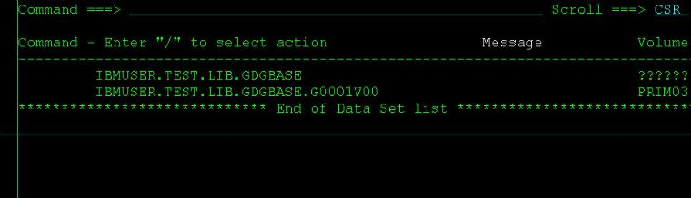

新建空的GDG generation
有时候你不希望GDG的当前generation里面有数据，但GDG又不能没有generation,否则JCL会提示找不到dataset。这时候你可以用IBM的IEFBR14utility来生成一个空的generation。IEFBR14它实际上什么也不做的空程序，常常被我们用来生成空的FILE。不只是gdg，普通的dataset也可以生成。

submit，查看，空的generation G0001V00 就生成了:

comments
更改GDG世代数参数
建完GDG base后更改GDG的generation。用下面的JCL提交即可。这里我将上次建的GDG base “IBMUSER.TEST.LIB.GDGBASE” 的世代数更改为5:

submit即可。 最后，你可以在GDG base前面用命令“LISTC GDG ENT(/) ALL”来检查看看是不是参数已经从10改成5了。
comments
Read More
新建GDG世代数据集
如何新建一个GDG base? 一种方法是用IDCAMS utility来建,只需提交一个JCL即可。看图：

其中，LIMIT(10)指定了生成GDG 的世代数(generation number)，简单吧！
comments
Read More
继续介绍世代数据集GDG
上篇文章我简单介绍了下大机平台上用到的一种叫做世代数据集(GDG)的文件，在这一篇里，我来比较详细地说明下GDG的用法和注意事项。
1、新建GDG base
一般我们可以用Job来新建一个GDG base，下面，我利用utility IDCAMS来生成一个名为IBMUSER.MYGDG.BASE并且可以有10个generation的GDG base。只要提交这个job马上就生成了GDG base了。

2、新建GDG generation
那么GDG base生成以后，如何生成一个generation呢，要怎么规定生成的generation的文件属性呢？这些都在你的Job里面做的，比如下面的JCL语句：
//EXTRACT DD DSN=IBMUSER.MYGDG.BASE(+1),
// DISP=(NEW,CATLG,DELETE),
// UNIT=SYSDA,
// SPACE=(CYL,(10,8)),
// DCB=(SYS1.MODEL,RECFM=FB,LRECL ...
comments
Read More
世代数据集—GDG介绍
跟大机打交道，一定对大机上面的一种特殊文件gdg不会陌生。gdg又称世代数据集，在大机上面是用来组织彼此相关联的文件。比如你需要一年12个月每个月的报表数据，则可以定义一个有12个generation（世代）的GDG，每个generation存一个月的数据，这样就保证了彼此关联的信息能被更方便地管理和维护。它会保证任何时候都只保留最新的12个月的数据。
要使用GDG，你必须先有一个GDG base，有了GDG base才可以不断地产生generation。GDG文件是用GDG base名字+generation number来唯一区别的。比如你新建了一个GDG base的名字叫做:
PROD.CLIENT.ACCOUNT.NUMBER
则一般你以此产生的第一个generation的名字就叫做:
PROD.CLIENT.ACCOUNT.NUMBER.G0001V00
以此类推，第二个就叫做：
PROD.CLIENT.ACCOUNT.NUMBER.G0002V00
直到G9992V00为止。G000,G001等等叫做世代编号，V00叫做版本号，据我所知，平常用到的基本都是V00，可以这么说，除非极特殊的情况，否则你这辈子不会用到V01 ...
comments
Read More